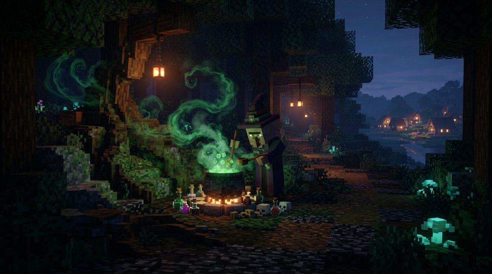

Overworld · Steps 3 and 5 of 12
Howling Woods in Minecraft Dungeons 2
Launch-week info, last checked . We update this page as patches and new data land.
Howling Woods, in short
Howling Woods is the third region in Minecraft Dungeons 2 and the busiest early one. It holds the Little Howl village, the lost-merchant quest that opens your second artifact slot, the enchanting quest, a rematchable Witch boss and poison zombies that players fear more than bosses.

Where does Howling Woods fit in the campaign?
- Region
- Overworld
- Campaign order
- Third stop, and again as step 5 after the Deep Dark
- Minecart stations
- Little Howl Hamlet and Woodcutter's Outpost
- Boss
- Wandering Witch (northern woods)
- Main danger
- Very long poison from zombies and spiders
What is there to do in Howling Woods?
| Place | Type | What to know |
|---|---|---|
| Little Howl Hamlet | Village and station | A village base with a minecart station, so you do not run back to Brave Haven. The enchanting quest sends you here. |
| Woodcutter's Outpost | Station | A second fast-travel point in the woods. |
| The Witch's clearing | Boss arena | In the northern woods, with a Boss Totem you can interact with to restart the fight. |
| Spider caves | Dungeons | Several caves. The game lights your path with a lantern on your back at night. |
| Off-path islands | Secrets | Small platforms away from the trail. Jump over to reach chests. |
Which mobs live in Howling Woods?
| Mob | Behavior | Notes |
|---|---|---|
| Zombie | Hostile | Poison variants apply poison for a very long time and can strip half your health. |
| Spider | Hostile | Also poisons. Spiders return from the first game. |
| Skeleton | Hostile | Ranged attackers; shooting an arrow at a projectile can cancel it. |
| Creeper | Hostile | Shows up in the woods like everywhere else on the Overworld. |
| Enderman | Hostile | Appears as a random mini-boss that vanishes and reappears. |
Which bosses are in Howling Woods?
| Boss | What to expect |
|---|---|
| Wandering Witch | The Witch of Howling Woods. In preview play she levelled herself up at a cauldron, and cornering her made the fight easier. Defeating her earns Craftier than Witchcraft. |
Which quests matter in Howling Woods?
| Quest or NPC | What it does |
|---|---|
| Lost merchant | Finding the merchant unlocks your second artifact slot, so this is the moment to add a Humbling Horn. |
| Enchanting quest | Head to Little Howl and take back enchanted books. An Evoker fight in a dungeon gives them, and the enchanter opens after you clear the village. |
| The Cleric's Apprentice | Rescue the apprentice in the woods to earn Spider Slayer. |
What is worth farming in Howling Woods?
| Loot | Notes |
|---|---|
| Enchantment books | Dungeons and the Evoker book quest give the first ones. Books go into your library and can be reused. |
| Grindstone | Artifact seen in dungeon loot here. It sharpens your weapon for extra damage. |
What do players tell you to do in Howling Woods?
- Keep potions ready and stay at range around poison zombies. A single hit can remove about half your health, and the poison keeps ticking.
- The Boss Totem makes the Witch a good rematch. Use it to test a build against the same fight several times.
- Bows are the best answer to hard-hitting enchanted melee mobs like the shield enemy with the electric attack.
- Jump to small off-path islands. Players say they usually have something worth the hop.
Quick answers on Howling Woods
How do I get the second artifact slot?
Finish the lost-merchant quest in Howling Woods. It opens your second artifact slot after you find the merchant.
Why do players fear the poison zombies?
Their poison lasts a very long time and one hit can remove around half your health. Keep range, bring potions and lean on a tank build if you have one.
Can I fight the Witch more than once?
Yes. Interact with the Boss Totem near her arena to reactivate the fight and go for her loot again.
Not confirmed yet in Howling Woods
- The Wandering Witch has no documented attack list, so her patterns above come from preview play.
- Witch loot is unknown. The boss rematch is confirmed, but the drop table is not.
Where to go from Howling Woods
Sources: Xbox Wire: How the interconnected world makes every journey an adventure.